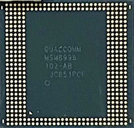

Qualcomm Snapdragon 835 (MSM8998)
|

MSM8998 in ceramic package |
|
| Manufacturer | Qualcomm |
|---|---|
| Name | MSM8998 |
| Codenames | msmcobalt/apqcobalt |
| Architecture | aarch64 |
| CPU | 4x 2.45 GHz Kryo 280 Gold, 4x 1.9 GHz Kryo 280 Silver |
| GPU | Adreno 540 |
| Year | 2017 |
| Process | 10nm |
| Mainline | yes |
| Community Page | https://gitlab.com/msm8998-mainline |
| Components | |
| CPU |
Partial
|
| UART |
|
| Storage |
Works
|
| USB |
Works
|
| Display |
Partial
|
| GPU |
Broken
|
| Pinctrl |
Works
|
| I²C |
Works
|
| Audio |
|
| Video |
|
| Thermal |
Works
|
| WiFi |
Works
|
| Bluetooth |
Works
|
| Modem |
Partial
|
| GPS |
Works
|
| Camera |
|
| Suspend |
|
{kind=link}
MSM8998 (or Snapdragon 835) is a high-end Qualcomm SoC released in 2017 with mainline support originally added for the MTP (proven reference design) board towards the end of 2018.
Devices
| Device | Codename | Mainline |
|---|---|---|
| Essential Phone (PH1) | essential-mata | N |
| F(x)tec Pro1(X) | fxtec-qx1000 | Y |
| Google Pixel 2 / XL | google-walleye, google-taimen | P |
| Motorola Moto Z2 Force | motorola-nash | N |
| OnePlus 5 | oneplus-cheeseburger | Y |
| OnePlus 5T | oneplus-dumpling | Y |
| Xiaomi Mi 6 | xiaomi-sagit | Y |
Booting
Assuming you derived your board DTS from the MSM8998 MTP ones, you'll likely notice a built kernel doesn't actually boot without any changes. This has been
tracked down to CoreSight tracing activating
, which seems to cause kernel panics on retail hardware. As per the linked patch, simply delete the added
etf
,
etm*
,
etr
,
funnel*
,
replicator1
&
stm
nodes from your DTS.
Additionally enabling some options such as
CONFIG_MSM_GPUCC_8998
may still cause the kernel to panic anyway. To avoid disabling "unused clocks" during
late_initcall()
, append
clk_ignore_unused
to your cmdline which can be done via
modifying the bootimg
,
bootargs on DTS
or
setting CONFIG_CMDLINE in defconfig
.
Display
Support for displays is currently marked as partial since mainline MSM8998 is completely missing device tree bindings for the MMCC , MDSS, MDP5 & DSI (as of 2020-11-16). However, unofficial patches for these are floating around and they seem to be fully working (as tested on the OnePlus 5 with a Samsung S6E3FA5 DSI cmd mode panel on Linux 5.10)!
For starters your best bet would be to setup
simplefb
though which utilizes the device framebuffer left active by the UEFI bootloader (Qualcomm XBL).
|
|
NOTE: Devices using DSC (Display Stream Compression) like the Pixel 2 XL will mostly likely not support simplefb! |
1. Enable
CONFIG_FB_SIMPLE
in your defconfig
2. Apply a patch like this one to
your
board DTS while (as needed) replacing
1080
with the screen width and
1920
with the screen height (in pixels):
$ cat msm8998-simplefb.patch
--- a/arch/arm64/boot/dts/qcom/msm8998-oneplus-cheeseburger.dtsi
+++ b/arch/arm64/boot/dts/qcom/msm8998-oneplus-cheeseburger.dtsi
@@ -10,10 +10,36 @@
aliases {
serial0 = &blsp2_uart1;
serial1 = &blsp1_uart3;
+ display0 = &framebuffer0;
};
chosen {
- stdout-path = "serial0:115200n8";
+ #address-cells = <2>;
+ #size-cells = <2>;
+ ranges;
+
+ /* HACK: Use "display0" for simplefb; for UART console use "serial0:115200n8" instead */
+ stdout-path = "display0";
+
+ /*
+ * Address and size extracted on-device using the following:
+ * # strings /dev/block/bootdevice/by-name/xbl | grep 'Display Reserved'
+ */
+ framebuffer0: framebuffer@9d400000 {
+ compatible = "simple-framebuffer";
+ reg = <0 0x9d400000 0 0x2400000>;
+ width = <1080>;
+ height = <1920>;
+ stride = <(1080 * 4)>;
+ format = "a8r8g8b8";
+ };
+ };
+
+ reserved-memory {
+ cont_splash_mem: memory@9d400000 {
+ reg = <0 0x9d400000 0 0x2400000>;
+ no-map;
+ };
};
vph_pwr: vph-pwr-regulator {
USB
Enabling USB on MSM8998 boards will differ between devices which use a USB 3.0 and USB 2.0 port.
Needed modules on defconfig side should include the following (and even
QUSB2
can be dropped later if it turns out your device doesn't use this):
CONFIG_USB_CONFIGFS=y CONFIG_PHY_QCOM_QMP=y CONFIG_PHY_QCOM_QUSB2=y
In general (and for USB 3.0 devices) the following in your DTS should be enough and you'll hopefully see the device detected on your host (assuming the kernel is configured with the needed modules):
&usb3_dwc3 {
dr_mode = "peripheral"; /* Force to peripheral until we have Type-C hooked up */
};
For USB 2.0 devices utilizing the QUSB PHY however that alone isn't enough and you should
remove
the
usb3phy
node entirely from your DTS & add the following configuration:
MSM8998 USB 2.0 configuration (DTS)
&usb3 {
/* Disable USB3 pipe_clk requirement */
qcom,select-utmi-as-pipe-clk;
};
&usb3_dwc3 {
/* Drop the unused USB 3 SuperSpeed PHY */
phys = <&qusb2phy>;
phy-names = "usb2-phy";
/* We can only operate at USB 2.0 speeds */
maximum-speed = "high-speed";
};
In case you've adjusted the
l24
regulator minimum value below
3088000
μV to match downstream and USB doesn't work with no (obvious) issues on device
dmesg
, try setting it back to to this higher 3.08V value to see if it helps;
this was the case on the OnePlus 5
for example.
UFS internal storage
|
Warning! |
IF YOUR DEVICE IS A SONY XPERIA DO NOT NEVER EVER EVER TRY TO ENABLE UFS ON NON-VENDOR/NON-SODP KERNELS! IT WILL ERASE THE CHIP CLEAN (INCLUDING THE BOOTLOADER!) CONSIDER YOURSELF WARNED |
To enable the device's internal UFS 2.1 host controller (and 14nm UFS QMP PHY), compile the kernel with the following modules enabled:
CONFIG_SCSI_UFS_QCOM=y CONFIG_PHY_QCOM_QMP=y
You can optionally set
CONFIG_SCSI_SCAN_ASYNC=y
for some additional speedup while booting. Consider also enabling
CONFIG_QFMT_V2
if you intend on writing data to a
userdata
partition formatted by Android where disk quotas are normally enabled by default for
ext4
volumes.
WLAN
For WLAN to work you need:
1. On the kernel side:
- The MSS (modem) remoteproc needs to be running with firmware extracted from the device partitions
-
DTS needs to point to the firmware filenames under
/lib/firmware/ - Currently if you get FW details printed in dmesg from ath10k with nothing else seemingly happening, you'll most likely have to fake an MSA ready indication
2. On the userspace side:
- Follow steps from jhugo's 5.5 MSM8998 Wi-Fi README (it's not perfect but should work)
-
Place all needed device firmware files to
/lib/firmware/ -
Make sure your OEM
wlanmdsp.mbnis in the same directory withmodem.mdt(ormodem.mbn)! -
Install the following pmOS packages:
pd-mapper,tqftpserv,qrtr&rmtfs -
Enable the services (
rc-update add SERVICE_NAME boot) for all of the above exceptqrtr(it's started automatically if needed) -
Run
diag-routerfrom https://github.com/andersson/diag in case MSS remoteproc keeps crashing and networks can be seen in e.g.nmtuisoon after booting
|
This page could use some expansion.
If you'd like to help out, feel free to
edit this article
!
In particular: The WLAN notes are just a rough sketch |
iwd
By default iwd (on the OnePlus 5 at least) has an issue where it will refuse to connect, apparently related to
EAPoL
.
This can be worked around by adding the following to
/etc/iwd/main.conf
(create the file if it doesn't exist).
[General]
ControlPortOverNL80211=false
" the EAPoL handshake is performed but we keep receiving packet 3/4 again and again on a 1 second interval. The replay key counter is never being increased so iwd just droped the packet and after a while the AP gives up "
The suggestion is either a wifi firmware bug, the driver not supporting nl80211 properly or an issue with the access point.
Bluetooth
Getting Bluetooth to work should be trivial assuming you compile the kernel with the following modules enabled:
CONFIG_RFKILL=m CONFIG_BT_RFCOMM=y CONFIG_BT_BNEP=y CONFIG_BT_HIDP=y CONFIG_BT_HS=y CONFIG_BT_LE=y
After those are set and you've copied the needed kernel modules over to the rootfs in
/lib/modules/
you just need the following firmware files in
/lib/firmware/qca/
:
crbtfw21.tlv crnv21.bin
Those can be supplied directly from
linux-firmware
and they should work fine, but if not you'll need to grab the files from your device's firmware partitions.
GPS
GPS should "just work" when the modem is up. You should check whether the Position Determination Service (PDS) is running using
qrtr-lookup
:
$ qrtr-lookup | grep PDS
16 2 0 0 83 Location service (~ PDS v2)
After this you can essentially install
GPSD with the Qualcomm PDS patch
, configure it to use
pds://any
as the device during runtime and you should be good to go.
Real-time clock (RTC)
The RTC module found on the PM8998 PMIC block works with
CONFIG_RTC_DRV_PM8XXX
enabled. It can be easily tested from userspace like so:
# cd /sys/class/rtc/rtc0/ # echo $((`cat since_epoch`+120)) > wakealarm
After running that and fully powering down the device it should power on by itself soon afterwards (2 minutes later to be exact).
Haptics
Haptics are supported, see Haptics for more details.
See also
linux-mainline-oneplus5 A mainline kernel fork with some patches for MSM8998 and OnePlus 5/5T support (check the 5.7 branch commits for a "step-by-step guide")
OnePlus_5_(oneplus-cheeseburger)#Mainline_kernel
Who's working on it
- User:Deathmist (@deathmist on Matrix)
- User:R0551 (@r0551 on Matrix)
- User:Degdag (@degdag on Matrix) [working on Xiaomi Mi 6]
- User:kalube (@caleb on Matrix) [working on Pixel 2 XL]
- SoMainline [working on F(x)tec Pro1 & SoMC Yoshino]
(feel free to add yourself here if you're working on MSM8998 mainlining!)